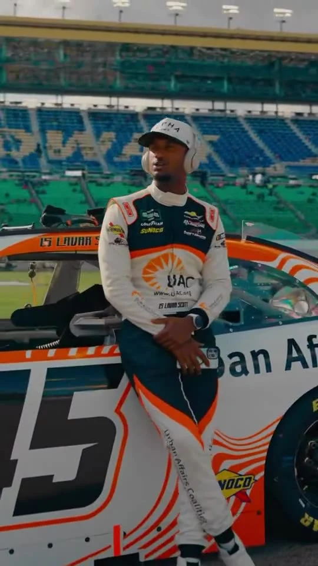
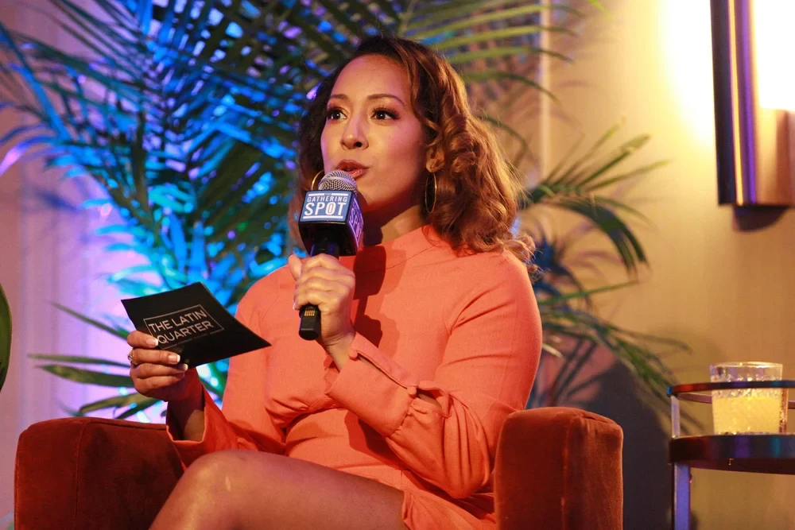
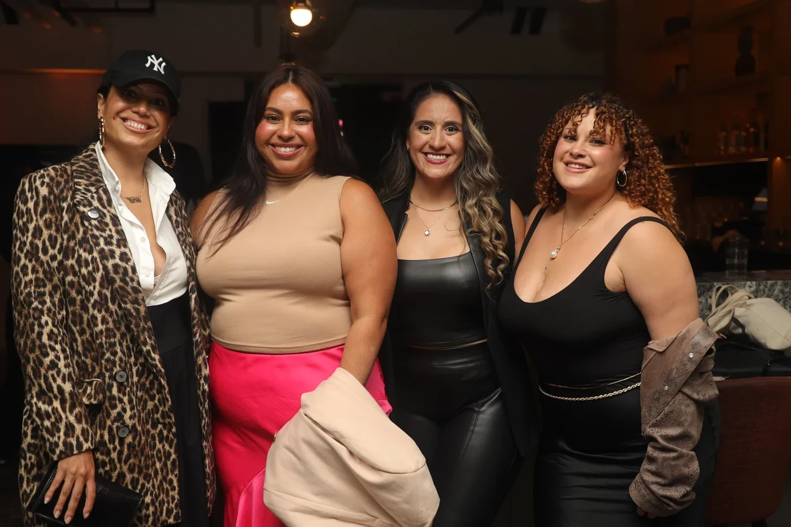
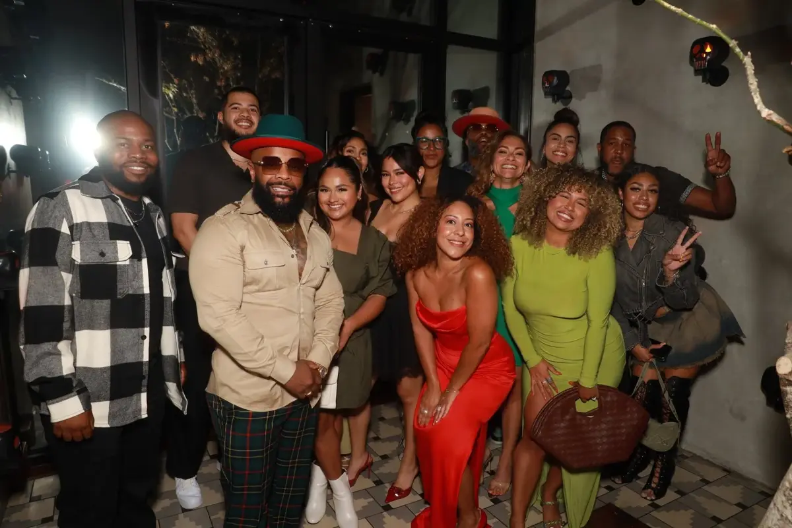

Sports / Culture / Athlete positioning
Lavar Scott.
Beyond the track.
Athlete brand strategy for Lavar Scott. A portfolio story at the intersection of motorsport, media and culture.
NEW YORK LOS ANGELES
We connect brands, creators and communities through cultural insight, compelling stories and the right partnerships.



The Latin Quarter perspective
For brands, nonprofits and agency teams, culture is a way to build lasting relationships. We bring strategy, communications and creator partnerships together to help the right stories reach the right communities.
A closer look at the people, partnerships and stories behind it.
Sports / Culture / Athlete positioning
Athlete brand strategy for Lavar Scott. A portfolio story at the intersection of motorsport, media and culture.
Community / Creator campaigns / PR
For the Crohn’s & Colitis Foundation, Latin Quarter brings cultural perspective to creator campaigns and community outreach.
Featured work: MyIBD Connections. Creator, influencer and PR work.
Discuss a campaignConversations, shared tables and the people who make a room worth being in.

Latin Quarter dinner at The Mexican.
Ghislaine León at The Gathering Spot.
Define what you stand for, who you want to reach and where you have something meaningful to say.
Build the story and put it in the right hands, through editorial, branded content, creator campaigns and public relations.
Connect brands, athletes and cultural talent around opportunities that make sense for everyone involved.
Founder & cultural strategist / New York + Los Angeles
Harlem roots and relationships across New York and Los Angeles. Ghislaine brings experience in brand partnerships, media and production to the people and organizations shaping culture.
The name honors New York’s Latin Quarter nightclub and its history as a meeting place for Black and Latinx creativity. That spirit of connection lives in the work today.
Connect with Latin QuarterTell us where you want to go. We’ll start with the conversation that fits.
Nothing has been sent. Copy this draft to use with your preferred contact method.